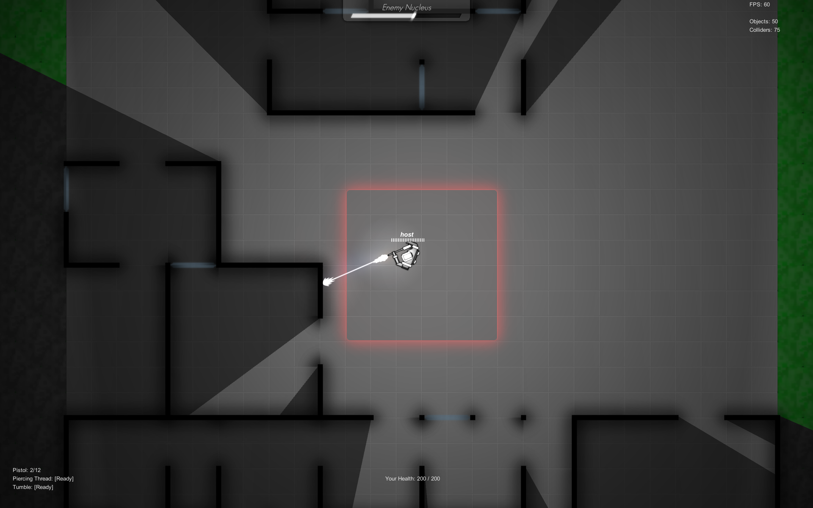

This is tactics.
pon is a 2D Top-Down Shooter. Each match introduces a completely new terrain in which teams must rely on innovative tactics and a constantly evolving strategy to win. Grab your friends and play versus other players!
Topics
Personal Growth
- Game Design
- Unity
- Network Programming
- Algorithms

About
During my fourth summer of college, I decided I wanted to make something impressive. Most of my previous projects –– either school related or working with VGDC –– were pretty small in comparison. Since such a task would likely consume a lot of my free time, I figured summertime would be ideal. I set about working on it immediately. To start off, I knew I wanted to make a multiplayer game since I had been looking into networking lately. Also, in my experience, VGDC members tend to shy away from networked games (they say it's unnecessarily difficult). So I decided to challenge myself and make something new.
The original idea was a mobile co-op survival game in which players need to escape from a building. You and your friends started off in different locations, so you needed to first find each other, then find the exit. There would be enemies lurking around that would hinder your success, that you needed to get around. To make the gameplay more interesting, I designed a variety of enemy types you would encounter. Along with different enemy types came different character classes, of course. Since each member of your team played a different role in surviving and getting to the exit, it also encouraged coordination.
I spent a while cycling between iterating over different designs and asking for opinions from my friends. The more and more I revised my design, the more exciting the game seemed. However, with each design iteration, I started noticing that this game was becoming more and more generic. A co-op survival game with classes and a variety of enemies? It's nothing new.
I went back to the drawing board and started designing a game that satisfies the new requirements. That is,
- The game must be multiplayer
- The game must encourage teamwork (I'm a sucker for teamwork in gameplay)
- The game must have some kind of strategy to it, not pure action
- Try to make it new
At this time, Blizzard came out with their new game, Overwatch, that everybody I knew had been hyping over for the longest time. I generally don't play FPS games due to a nauseating feeling I get from the rapid perspective rotation. But with all the hype going around, I figured I'd at least suck it up a little and join in on the fun. I ended up really enjoying the multiplayer teamwork and strategy involved in the game. Hey, wait, wasn't that the kind of game I was trying to make?
I spent the next couple of weeks designing my game and talking with my friends about it. I think it was then that I had established the core concepts of pon: 2D Top-Down Shooter, Control-Point Style and Procedurally-Generated.